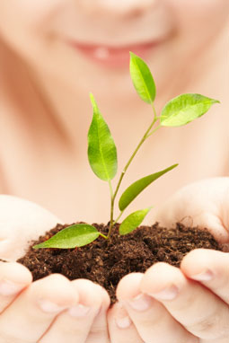

|
Home > Services > Community Outreach
Community Outreach Programs of Nithyananda Dhyanapeetam, India
| 
|
Together making a blissful difference...
Nithyanandaji says, "Responsibility is a Consciousness. The moment you feel responsible for what is happening around you, that moment the Divine Energy will rush into you! This is a basic secret of Life. The more responsibility you take up, the more you will expand and grow. You will become a leader. Most of us wait for the status to come and then take up the responsibility. Only if we take up the responsibility, the status will come!"
Having emerged as an inspiring personality, Nithyanandaji transforms individuals
around the globe through his simple teachings and powerful meditation
techniques.
A few of the community outreach projects supported by Life Bliss Foundation are -
|
Life Bliss Technology - A Youth Empowerment project
Nithyanandaji says, "A handful of spiritually evolved and well-centered youth is enough to transform the entire humanity." Life Bliss Technology is a free one-year residential program offered by Dhyanapeetam in India for youth aged between 18 and 30 . The thrust of the program is to help youth from all types of socio-economic backgrounds to become self-supporting and confident in facing life and excelling in whatever field they may choose. The program empowers through -
- Customized training based on aptitude and ability
- Experiential Learning
- Training in different vocational skill sets
- Ability & confidence to be economically self-sufficient
- Creative intelligence and spontaneity
- Good physical and mental health
- Capacity to actualize one's potentiality
Nithyanandaji's vision for the current phase of the project is to empower at least 1000 youth with the capacity to be economically self-supporting and spiritually stable through the program this year. Dhyanapeetam meets all needs of the students during the year along with providing vocational and spiritual training with expected costs of 1,000 USD per student per year.
Gnana Dhaan - Giving Wisdom to the Youth
"When meditation is taught to youth, collective negativity can be destroyed, crime rate brought down and countries can be seen flourishing." - Nithyanandaji
In tune with these words and Nithyanandaji's vision, Dhyanapeetam, India has initiated the movement Gnana Dhaan (giving wisdom) to give discourses and meditation tools free of charge to 1 million youth to show them the way to blissful living. The movement -
- Aims at kindling the inner intelligence of youth
- Provides a complementary tool for Accelerated learning
- Teaches the science of blissful living
- Awakens the inner potentiality of youth
- Creates awareness of life's higher values
- Improves interpersonal relationships
- Empowers with Stress management & ability to deal with life's challenges
Ananda Aashraya - A loving home for senior citizens
Ageing is an irreversible biological phenomenon. It is also the survival of a growing number of people completing their traditional adult roles. Ananda Ashraya program of Dhyanapeetam, India works towards providing all round care for the aged. The key components of the program are medical care, balanced nutrition, basic comforts of living and a loving community environment. The residents of Ananda Aashraya also have free access to the various meditation programs that are conducted at the Ashram in India all through the year.
Ananda Bhavishya - Spiritual Education for Children
Under the aegis of the Master, students are blessed with the Gayathri initiation and set on a course of spiritual education. The initiation is given to children between 5 and 12, to kindle his/her inner intelligence to flower. The Gayathri mantra is a prayer to the Cosmic Intelligence for it to flower from within each one. The spiritual education runs parallel to the traditional education and helps children establish in a deeper knowledge of the inner bliss...helping them work towards a blissful future.
Click to download the Community Outreach Program brochure.
|